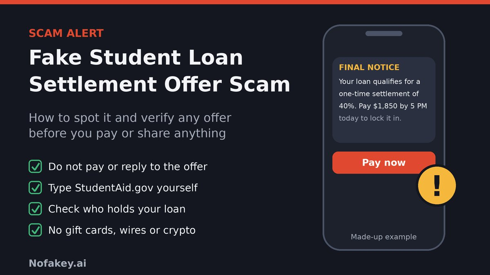

"Good news: your student loan qualifies for a one-time settlement. Pay 40% of your balance by 5 p.m. and the rest is erased." After years of statements, interest and headlines about repayment rules, that sounds like the offer you have been waiting for. It is also exactly what a scammer wants you to think. The trick is not hacking anything. It is a believable number, a short deadline and a payment link, delivered to someone who is tired and hopeful.
What is the fake student loan settlement offer scam?
Most warnings about student loan fraud are about "forgiveness". The settlement version is a close cousin with a different hook: instead of promising to cancel your debt, it promises to settle it for less than you owe. That wording matters, because settlement is a real thing. Some defaulted loans do get compromised, private lenders sometimes agree to take less, and courts and state attorneys general announce settlements with schools and servicers. Scammers borrow that credibility.
You will usually meet it in one of three forms:
- The "pay now" version. A text, email or voicemail says you qualify for a discounted payoff and must pay a set amount today.
- The "fee for a program" version. A company says it will negotiate with your lender or enroll you in a government program, and asks for an up-front fee or a monthly charge.
- The "settlement news" version. After a real settlement makes headlines, messages claim you must act, pay a "processing fee" or hand over personal details to receive your share.
Federal Student Aid and the Department of Education's Office of Inspector General both warn that scammers aim to steal money, personal information or both, and that they exploit promises of forgiveness, debt relief, avoiding default and avoiding wage garnishment. A "settlement" is that same pitch with a number attached.
How the scam works, step by step
- The hook. A call, text, email, letter, social media ad or direct message says you qualify for a settlement, a reduced payoff or a "final notice" program. It often arrives with details that sound personal, such as an approximate balance or your servicer's name, which scammers may have guessed or bought.
- The pressure. The offer expires today, spots are limited, or you are warned of garnishment, a lawsuit or a damaged credit score.
- The number. A specific price: 40% of your balance, a flat $1,850, "three easy payments". Specific numbers feel official.
- The ask. Pay through a link, a payment app, a gift card, a wire or crypto. Or share your FSA ID, Social Security number, bank login or a signed authorization form so they can "handle everything".
- The follow-up. If you pay, there may be a "final processing fee", a second payment or a monthly charge. If you shared logins, they may change your contact details so real notices never reach you.
Cases that show the pattern
A Colorado television station reported on a "final notice" letter whose caller already knew the recipient's loan details, quoted $39 a month and then asked for $1,000 up front. When a real settlement is announced, scammers pile on: the Pennsylvania Attorney General's Office warned in 2019 that callers were contacting former Sanford-Brown students about a large multistate settlement and asking for Social Security numbers and advance payments, and a Wabash Valley television station reported similar spam after a Navient settlement was announced. The Federal Trade Commission has also brought many cases against student debt relief operations, including one where it alleged a scheme collected roughly $8.8 million in illegal advance fees for services that did not exist, according to the FTC.
What a real settlement looks like, and what a fake one does differently
Most guides say "never trust offers" and stop there. That leaves people with a genuinely defaulted loan unsure whether any offer could be real. These are the main situations where the word "settlement" is used honestly, and how each one can be verified. Rules and programs change, so confirm current details on the official sites listed at the end.
| Situation | Who really makes the offer | How to verify it yourself | Warning sign |
|---|---|---|---|
| Defaulted federal loan | The Department of Education through its own default collections process (its default collections office is called the Default Resolution Group), or a collection agency working for it | Sign in to StudentAid.gov, which shows your loans, their status and who holds them. Get any phone number from that site, not from the offer. | A caller who cannot be matched to your StudentAid.gov account, or who wants payment through a private link or app |
| Private student loan | Your lender, its servicer or a collector it has hired. No law forces a private lender to offer a settlement. | Use the website or the phone number on your latest statement. If you do not know who holds a private loan, your credit report lists it. | A third party you never heard of "buying" or "taking over" your loan, or asking for money before any written agreement |
| Court or attorney general settlement with a school or servicer | A court-approved administrator or a government office, usually by mail or official notice | Look for the announcement on your state attorney general's website or the official settlement site, found by searching for the case name and checking the .gov source | Any fee, "processing charge" or request for your Social Security number to claim your share |
| Repayment or forgiveness programs | You apply directly through StudentAid.gov or your servicer, at no charge | StudentAid.gov lists current programs and the free application | Anyone who charges to "enroll" you, or says you have been pre-approved |
One test works for all four. A genuine offer can be found by you, starting from a website you typed or a statement you already have. If the only way to learn about it is through the person who contacted you, treat it as unverified.
Also keep taxes in mind. Debt that is forgiven or settled for less can sometimes count as taxable income, so before agreeing to any real settlement, ask your servicer for the paperwork and check the IRS guidance on canceled debt or talk to a tax professional.
What scammers are after
| What they get | How they use it |
|---|---|
| The "settlement" payment | You pay hundreds or thousands of dollars and your loan balance does not change |
| FSA ID (username and password) | Logging in as you, changing your contact details or repayment plan, and seeing your personal and loan information. The Department of Education says no one except you should ever need your FSA ID. |
| Social Security number and date of birth | Opening accounts or applying for credit in your name |
| Bank, debit or credit card details | Repeat charges, "monthly fees" and unauthorized withdrawals |
| A signed authorization or power of attorney | Giving a third party the right to speak for you and handle your account |
| Your phone number, email and loan details | Follow-up scams that already know who you are and what you owe |
Realistic scam message examples
These are composite examples written to show the pattern. They are not reports about real people or real companies, and the numbers and addresses are made up.
Example 1: The "lock in your settlement" text
- From
- An ordinary mobile number
FINAL NOTICE: Your student loan account qualifies for a one-time settlement of 40% of your balance. Pay $1,850 by 5 PM today to lock it in: loan-settle-now.example/pay
Why it's a scam: no loan name, a hard deadline, a fixed price and a payment link on a domain that is not a government or servicer site. Check your loans yourself at StudentAid.gov.
Example 2: The "case file" voicemail
- Channel
- Voicemail from a number that looks local
"This is the Federal Loan Resolution Center regarding case number 44-2917. Your file has been approved for a reduced settlement. The window closes today. Call back right away so we can process your authorization and avoid wage garnishment."
Why it's a scam: an official-sounding name that matches no agency you can find, a made-up case number, a threat and a request to "process your authorization". Do not call back.
Example 3: The "signature required" email
- From
- "Settlement Department" <docs@student-loan-settlement-team.example>
- Subject
- Action required: sign your student loan settlement agreement
Your settlement agreement is ready. Sign in with your FSA ID to review and e-sign. Failure to respond within 24 hours will cancel your eligibility.
Why it's a scam: a lookalike sender, a signing page that wants your FSA ID, and a 24-hour deadline. Never sign in to StudentAid.gov through an emailed link.
Example 4: The "final notice" letter
- Channel
- Paper letter with an official-looking seal
FINAL NOTICE. Your federal student loans are eligible for a settlement program. Call (555) 010-0147 within 10 days. Participants pay a one-time enrollment fee and a $39 monthly maintenance fee.
Why it's a scam: an enrollment fee plus a monthly fee for help you can get for free, and a call-in number you cannot verify. Mailed letters can be fakes too.
Example 5: The "settlement fund" ad or direct message
- Channel
- A social media ad or a message from a "claims specialist"
Former students of a school in the news may be owed settlement money. Reply with your name and the last four of your Social, then pay a small processing fee through a payment app to release your claim.
Why it's a scam: real settlements do not charge you to receive money, and a stranger asking for personal details and an app payment is a red flag. Check the actual announcement on an attorney general or court website.
Example 6: The "settle today or face legal action" call
- Channel
- Phone call from a self-described "collection attorney"
"Your account is being referred for legal action and wage garnishment. We can stop it if you accept our settlement today. Buy gift cards, or use the crypto machine at the gas station, and read me the numbers."
Why it's a scam: unpaid student loans do not lead to arrest, and no genuine servicer or agency asks for gift cards or crypto. Hang up and look up your account yourself.
Warning signs of a fake settlement offer
- You did not ask for it, and it reaches you by an unexpected call, text, email, letter or ad.
- It requires an up-front or monthly fee for help. The Department of Education and the FTC both treat this as a clear sign of a scam.
- It promises immediate, total or guaranteed cancellation of your loans.
- It asks for your FSA ID or asks you to sign a third-party authorization or power of attorney form.
- The deadline is today, and the penalty is garnishment, a lawsuit or a credit hit.
- It wants a strange payment method: gift cards, wire transfer, cryptocurrency, a payment app to a person, or a cashier's check to a private address.
- It says you are "pre-approved" or that the offer is secret, limited or "not available to the public".
- It claims a special relationship with the Department of Education or your servicer, using official-sounding names and logos.
- It tells you to stop talking to your servicer or to route all contact through them.
- No written terms before you pay, or terms that do not match what you were told on the phone.
How scammers want to be paid
| Payment method | Why it should worry you |
|---|---|
| Gift cards | No genuine servicer, agency or collector requires them for a loan payment, and the money is very hard to recover |
| Wire transfer or crypto ATM | Fast, hard to reverse and common in impostor scams |
| Payment apps to a person | Often treated like cash, with limited ways to get the money back |
| A link to a "secure payment page" | May be a lookalike page built to steal card or bank details |
| Remotely created checks or bank details over the phone | Lets a stranger pull money from your account, sometimes repeatedly. The FTC has cited this tactic in student debt relief cases. |
The safe pattern is simple: pay only through the website or payment address of your servicer or the Department of Education, which you reached by typing the address or using a bookmark, and only after you have verified the amount in writing.
How to check a suspicious link
- Do not tap it. Press and hold, or hover, to read the address without opening it.
- Find the domain. It is the part right after
https://and before the first single/. Inhttps://studentaid.gov.loan-help.com/pay, the real site isloan-help.com, not studentaid.gov. - Read the ending first. The last parts decide who owns the page. Anything in front can be made up.
- Know what official looks like. Federal sites end in
.gov, such asstudentaid.gov,ed.gov,ftc.govandconsumerfinance.gov. Loan servicers are private companies, so their sites usually end in.comor.org. Take a servicer's address from StudentAid.gov or your statement, not from a message. - Watch for lookalikes: hyphens, extra words ("settlement", "relief", "forgiveness", "federal") and endings like
.topor.xyz. - Be wary of shortened links and QR codes, which hide the real destination.
- Do not rely on the padlock. https only means the connection is encrypted. Fake pages can have it too.
- Never sign in to StudentAid.gov through a link. Type the address yourself.
Try the link scanner
Paste a link and, if you know your servicer's real address, enter it too. The tool looks for common tricks and checks whether the link is on a known U.S. government site. It reads the text only. It does not open the link, and nothing you paste leaves your browser.
How to verify a settlement offer yourself
If you think an offer might be real, do not argue with the caller or click anything. Take over the process.
- Pause and keep your information. Do not confirm your name, balance, Social Security number, FSA ID or bank details. If a call is live, hang up.
- Type StudentAid.gov into your browser and sign in. It shows which federal loans you have, who services them and whether they are in good standing or default. If you cannot find the loan being discussed, that is a strong sign the offer is not about a federal loan.
- For private loans, use the lender's website or the number on your latest statement. If you are not sure who holds a private loan, your credit report lists it, and you can get your reports through the official AnnualCreditReport.com.
- Ask the real holder directly whether any settlement, compromise or program offer exists on your account, and ask for it in writing.
- Compare the details. The name of the sender, the amount, the payee and the payment method should all match what the official source tells you.
- Take your time. A real offer will still be there after you check, and a real holder will give you a written agreement before you pay.
Questions to ask anyone who contacts you
- What is your full company name, and which loan holder do you work for?
- Can you send the offer in writing before I do anything? (If they push you to decide first, stop.)
- Who exactly gets paid, and through which official payment address?
- I will verify this myself through StudentAid.gov or my lender. What reference number should I give them?
Where did the offer come from?
Does it matter which state you live in?
The core advice is the same in all 50 states and D.C., because the federal loan system, the Department of Education's guidance and the FTC's rules on advance fees apply everywhere. What differs is the extra help. Your state attorney general's consumer protection office takes complaints, can tell you about any state rules covering student loan servicers or debt relief companies, and sometimes publishes alerts about local scams, as the Illinois Attorney General did when collections on defaulted federal loans were scheduled to resume. Pick your state to see where to start.
Prevention tips
- Never share your FSA ID, including with people who say they work for your school or servicer.
- Never pay a fee for help with federal student loans. Repayment options, consolidation and forgiveness applications for federal loans are free at StudentAid.gov, and for private loans the FTC says to start by talking with your loan servicer.
- Be suspicious of any offer you did not request, especially one with a deadline.
- Keep your contact details current with StudentAid.gov and your servicer, so real notices reach you and scammers cannot pose as them.
- Save your servicer's website and phone number from your statement or StudentAid.gov, so you never need to search under pressure.
- Do not sign authorization forms or powers of attorney for a company you found through an ad or a call.
- Use payment methods you can dispute, and pay only through your servicer's own site.
- Watch the news carefully. When a real settlement is announced, expect imitators to follow within days.
- Talk to family, friends and classmates, especially anyone feeling financial pressure.
- Report suspicious offers to the FTC even if you did not fall for them, so investigators can see the pattern.
What to do if you paid, shared information or signed something
Act quickly, and do not be embarrassed. These offers are written to catch careful, stressed people. Recovery is never guaranteed, but fast action gives the best chance of limiting the damage.
If you shared your FSA ID
- Change your FSA ID password at StudentAid.gov right away, and use a password you have not used elsewhere.
- Review your account. Check your contact information, repayment plan, any authorizations and recent activity, and fix anything you did not change.
- Tell your loan servicer what happened so it can add a note to your account.
If you shared your Social Security number or bank details
- Report at IdentityTheft.gov, the FTC's site, which creates a recovery plan and explains fraud alerts and credit freezes.
- Consider a credit freeze, which is free, and check your credit reports at AnnualCreditReport.com for accounts you did not open.
- Call your bank or card issuer, tell them what you shared, and ask about closing or replacing accounts and stopping any recurring charges.
- Consider an IRS Identity Protection PIN to help prevent someone filing a tax return with your Social Security number. See the IRS page.
If you paid money
- Contact the bank, card issuer or payment app immediately, explain it was a scam and ask what can be disputed or stopped.
- For gift cards, wire transfers or crypto, contact the card company, your bank or the exchange straight away. These are the hardest to recover, so speed matters.
- Cancel any recurring payment to the scammer and watch your account for repeat charges.
- Keep evidence: messages, numbers, emails, letters, payment receipts, screenshots and any documents you signed.
If you signed an authorization or a contract
- Contact your real servicer and ask how to revoke any third-party authorization.
- Tell the company in writing that you are cancelling, and keep a copy.
- Contact your state attorney general if the company will not stop charging you.
Be wary of anyone who contacts you offering to "recover" your money for a fee. That is a common second scam.
Tell me what happened
Where to report
| Who | Use it for | How |
|---|---|---|
| Federal Trade Commission | Reporting any student loan scam, even if you lost nothing | ReportFraud.ftc.gov |
| FTC IdentityTheft.gov | Identity theft, a recovery plan, fraud alerts and credit freezes | IdentityTheft.gov |
| Department of Education OIG | Fraud involving federal student aid | oig.ed.gov (look for its hotline) |
| FBI Internet Crime Complaint Center | Online and phone fraud, especially larger losses | ic3.gov |
| State attorney general | Complaints, state rules and local alerts | NAAG: find your AG or USA.gov state consumer offices |
| Your loan servicer | Account changes and fraud notes | The contact details on StudentAid.gov or your statement |
| Your bank or card issuer | Disputes, blocks and replacing accounts | The number on your card or statement |
Agency programs and contact details change, so check each official site for the latest.
Conclusion
The fake student loan settlement offer scam works because settlement is real, and because a deadline and a discount are hard to resist when you are worried about debt. You do not have to judge every message. Treat an unexpected offer as unverified, type StudentAid.gov or your lender's address yourself, check who holds your loans, and never pay a fee, share your FSA ID or use a gift card, wire or crypto. If something has already gone wrong, change your passwords, call your bank and report it to the FTC.
Related scams use the same pressure. Read our guides on the fake video KYC rescheduling scam, the fake identity reverification scam, the fake digital identity verification link scam, the fake QR code verification scam and the fake customer support chat scam.
Got a message you are unsure about? Paste the text into our free checker for a quick first read.
Frequently asked questions
What is a fake student loan settlement offer scam?
It is a scam where a call, text, email, letter or ad says you can settle or wipe out your student loans for a lump sum or a fee, usually with a tight deadline. The aim is to take your money, your FSA ID, your Social Security number or your bank details.
Are there real student loan settlements?
Yes, but they come through specific channels. A defaulted federal loan can sometimes be compromised through the Department of Education's own collections process, a private lender may offer to settle an account, and courts or attorneys general sometimes announce settlements with schools or servicers. In every case you can verify the offer yourself, and you never have to pay a stranger to receive one.
Should I pay a company to negotiate my student loan settlement?
Be very cautious. The FTC says it is illegal for companies to charge you in advance before helping you reduce or get rid of your student loan debt, and that anything a company can do for you on federal loans you can do for free through StudentAid.gov. For private loans, start by contacting your lender or servicer directly.
How can I check whether a settlement offer is real?
Do not use the phone number, link or email in the offer. Type StudentAid.gov yourself and sign in to see which federal loans you have, who holds them and whether they are in default. For private loans, use the lender's website or the phone number on your statement. Ask for any offer in writing and compare it with what the official source tells you.
I gave a scammer my FSA ID or Social Security number. What now?
Change your FSA ID password at StudentAid.gov, review your account for changes, and tell your loan servicer. If your Social Security number or bank details were shared, report at IdentityTheft.gov, consider a free credit freeze, check your credit reports and contact your bank.
I already paid. Can I get my money back?
Sometimes, but it is not guaranteed. Contact your bank, card issuer or payment app right away and ask what can be disputed or stopped, then report the scam to the FTC at ReportFraud.ftc.gov. Payments made by gift card, wire transfer or cryptocurrency are the hardest to recover, so speed matters.
Does it matter which state I live in?
The core advice is the same in all 50 states, because federal rules and the federal loan system apply everywhere. Your state attorney general's consumer protection office can add help and tell you about any state rules that apply to student loan servicers or debt relief companies where you live.
This guide is general information, not legal, tax or financial advice. Loan rules and collection policies change, so check StudentAid.gov and your servicer for what applies to you.
Got a settlement offer you want checked?
Run it through the checker